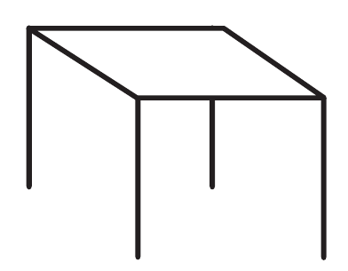
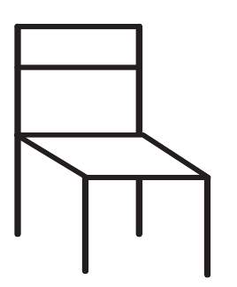
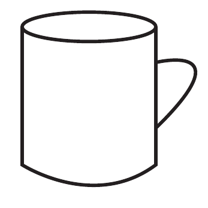
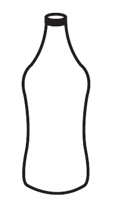

Lesson 3: Drawing pictures of objects
Lesson 3
Drawing pictures of objects
Draw these pictures of objects in your relevant writing materials

A picture of a simple rectangular table shown in perspective with a flat top and four legs.
Clear

A picture of a straight-backed chair shown in perspective with a seat, four legs, and back supports.
Clear

A picture of a cylindrical cup with an open round top and one curved handle on the side.
Clear

A picture of a tall bottle with a narrow neck, small opening, sloping shoulders, and a wider body.
Clear